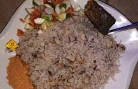

WAKE DA SHINKAFA

DESCRIPTION
Wake da Shinkafa, which translates to "Beans and Rice, is a popular and highly nutritious dish enjoyed across
Hausaland and Northern Nigeria.
a simple yet filling meal made by boiling rice and beans together until soft,creating a wholesome
combination rich in protein and carbohydrates.
This dish is often served with palm oil, vegetable oil, or groundnut oil,enhancing its taste and providing
additional energy.
Some variations include adding fried onions, pepper, and seasoning cubes for extra flavor.
Wake da Shinkafa is eaten with spicy pepper sauce (yaji) or tomato stew and can be paired with fried plantains,
fried fish, or boiled eggs.
is a common meal for breakfast, lunch, or dinner due to its affordability, simplicity, and nutritional benefits.
Many Hausa people enjoy it as a street food or homemade meal, making it a staple in both rural and urban areas.
INGREDIENTS
- (shinkafa)
- beans (wake)
- Salt
- Water
- oil (for frying)
-
STEPS FOR PREPARING WAKE DA SHINKAFA
- Start by picking out any dirt or stones from the beans, then rinse them thoroughly.
Pour the beans into a pot,
add enough water, and bring them to a boil for about 15 to 20 minutes.
-
Drain the water, rinse the beans again,
and add fresh water before cooking until they start to soften.
- Wash the rice thoroughly to remove excess starch and set it aside. Once the beans are almost soft,
add the washed rice to the pot and stir. Pour in enough water to cover the mixture, then cover the
pot
and allow it to cook on medium heat.
- Stir occasionally to prevent burning and ensure even cooking.
As the rice and beans soften, add salt to taste and continue cooking until the water is fully absorbed.
Once done, remove from heat and serve with your preferred sauce, stew, or side dish.
HOME